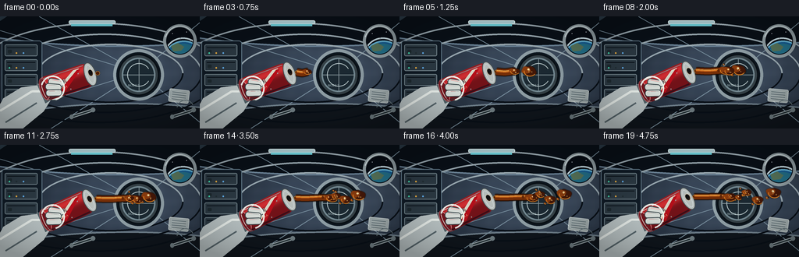
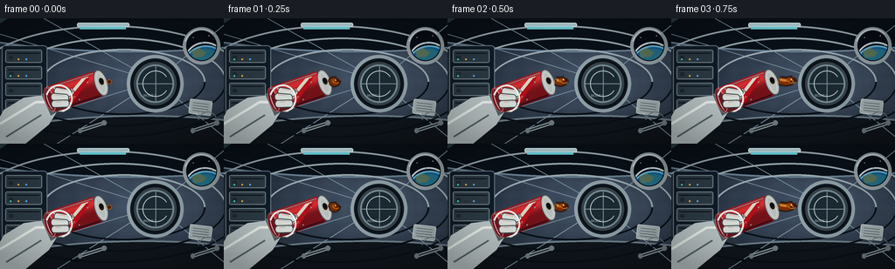

CODING AGENTS AS PIXEL WORLD MODELS
traex/GPT-5.6-Sol · phygen_005
点击播放 · 原生 RGB 像素
逐轮保存的候选
回放视频、检查图与代码变化。
每份候选均可单独播放。实际图片检查记录在下方工具轨迹中。
候选 01播放与检查图
点击播放 · 原生 RGB 像素


展开代码变化
--- 上一保存版本
+++ 本次保存版本
@@ -0,0 +1,306 @@
+from pathlib import Path
+import math
+import numpy as np
+from PIL import Image, ImageDraw, ImageFont, ImageFilter
+import artifact_io
+
+# Deterministic, supersampled hand-rendered animation.
+W, H, N, SS = 256, 144, 20, 4
+RW, RH = W * SS, H * SS
+TAU = math.tau
+
+
+def sc(v):
+ if isinstance(v, (tuple, list)):
+ return tuple(int(round(x * SS)) for x in v)
+ return int(round(v * SS))
+
+
+def font(size):
+ # PIL's bundled bitmap font keeps this generator self-contained.
+ return ImageFont.load_default(size=max(8, int(size * SS)))
+
+
+def rounded(draw, box, r, fill, outline=None, width=1):
+ draw.rounded_rectangle(sc(box), radius=sc(r), fill=fill, outline=outline, width=sc(width))
+
+
+def station_background(frame):
+ # Cool radial illumination gives the cylindrical cabin volume.
+ yy, xx = np.mgrid[0:RH, 0:RW]
+ px, py = 174 * SS, 69 * SS
+ dist = np.sqrt(((xx-px)/(220*SS))**2 + ((yy-py)/(122*SS))**2)
+ edge = np.clip(dist, 0, 1)
+ light = 1.0 - edge
+ arr = np.zeros((RH, RW, 3), np.float32)
+ arr[..., 0] = 22 + 49*light
+ arr[..., 1] = 31 + 56*light
+ arr[..., 2] = 43 + 64*light
+ # Fine material grain, fixed in the station coordinates.
+ grain = (np.sin(xx*.071) + np.sin(yy*.113) + np.sin((xx+yy)*.039))*1.1
+ arr += grain[..., None]
+ im = Image.fromarray(np.uint8(np.clip(arr, 0, 255)), 'RGB').convert('RGBA')
+ d = ImageDraw.Draw(im, 'RGBA')
+
+ # Curved shell: floor and ceiling arcs/ribs.
+ d.ellipse(sc((-145, -109, 450, 39)), fill=(10,17,25,205), outline=(107,131,151,150), width=sc(2))
+ d.ellipse(sc((-116, 111, 441, 282)), fill=(16,22,29,240), outline=(112,129,141,180), width=sc(2))
+ d.arc(sc((-82,-64,432,199)), 196, 343, fill=(126,147,160,150), width=sc(2))
+ d.arc(sc((-46,-45,401,186)), 198, 342, fill=(44,60,73,220), width=sc(5))
+ # Wall perspective seams toward the distant hatch.
+ vp=(178,72)
+ for p in [(0,18),(0,127),(50,0),(65,144),(256,8),(256,136)]:
+ d.line([sc(p),sc(vp)], fill=(122,145,160,65), width=sc(1))
+ # Repeating structural ribs.
+ for box in [(-32,8,282,137), (9,22,259,124), (48,35,235,111)]:
+ d.arc(sc(box), 178, 360, fill=(159,175,183,110), width=sc(2))
+ d.arc(sc(box), 0, 182, fill=(9,16,24,140), width=sc(2))
+
+ # Left equipment rack and padded stowage bags.
+ rounded(d, (2,31,54,111), 4, (17,28,39,245), (104,129,145,170), 1)
+ for y in (36,55,74,93):
+ rounded(d, (6,y,48,y+15), 2, (45,59,69,255), (121,139,147,120), 1)
+ d.line([sc((9,y+4)),sc((45,y+4))], fill=(9,17,24,170), width=sc(1))
+ rounded(d, (10,y+7,15,y+11), 1, (31,43,49,255))
+ # Control LEDs (small restrained animation).
+ ledcols=[(68,225,181,255),(255,183,66,255),(103,184,255,255)]
+ for i,(x,y) in enumerate([(12,47),(21,47),(30,47),(12,66),(21,66),(30,66)]):
+ c=ledcols[i%3] if (frame+i)%6 != 0 else (35,47,53,255)
+ d.ellipse(sc((x-1,y-1,x+1,y+1)),fill=c)
+
+ # Distant circular hatch.
+ d.ellipse(sc((145,42,210,108)), fill=(16,26,35,255), outline=(146,162,169,220), width=sc(4))
+ d.ellipse(sc((151,48,204,102)), fill=(55,67,73,255), outline=(10,17,23,255), width=sc(2))
+ d.ellipse(sc((156,53,199,97)), fill=(28,42,51,255), outline=(117,139,148,190), width=sc(2))
+ d.line([sc((178,54)),sc((178,96))], fill=(127,143,149,100), width=sc(1))
+ d.line([sc((157,75)),sc((198,75))], fill=(127,143,149,100), width=sc(1))
+ d.arc(sc((163,60,193,90)), 32, 328, fill=(186,202,204,130), width=sc(1))
+ d.text(sc((164,86)), 'NODE 2', font=font(4.2), fill=(174,195,198,190))
+
+ # Right porthole, with blue Earth limb outside.
+ d.ellipse(sc((209,10,252,53)), fill=(8,13,21,255), outline=(151,165,170,240), width=sc(4))
+ winmask=Image.new('L',(RW,RH),0); md=ImageDraw.Draw(winmask)
+ md.ellipse(sc((214,15,247,48)), fill=255)
+ earth=Image.new('RGBA',(RW,RH),(0,0,0,0)); ed=ImageDraw.Draw(earth,'RGBA')
+ ed.ellipse(sc((210,31,261,78)), fill=(23,96,151,255), outline=(113,204,242,230), width=sc(2))
+ ed.ellipse(sc((217,35,253,64)), fill=(41,131,160,220))
+ ed.polygon([sc((219,38)),sc((228,34)),sc((236,39)),sc((232,44)),sc((222,45))], fill=(105,140,106,215))
+ ed.arc(sc((211,27,258,70)),190,310,fill=(225,247,255,230),width=sc(2))
+ # A handful of stars visible in the black top of the porthole.
+ for x,y,a in [(221,22,190),(239,20,230),(231,28,140),(244,31,180)]:
+ ed.ellipse(sc((x-.45,y-.45,x+.45,y+.45)),fill=(235,244,255,a))
+ earth.putalpha(Image.composite(earth.getchannel('A'), Image.new('L',(RW,RH),0), winmask))
+ im=Image.alpha_composite(im,earth)
+ d=ImageDraw.Draw(im,'RGBA')
+ d.arc(sc((211,12,250,51)),195,315,fill=(232,244,246,150),width=sc(1))
+
+ # Ceiling lights and bottom handrails.
+ rounded(d,(88,5,148,10),2,(184,217,224,210),(235,255,255,170),1)
+ d.line([sc((91,11)),sc((144,11))],fill=(115,218,230,65),width=sc(3))
+ for x in (18,91,220):
+ d.line([sc((x,129)),sc((x+28,120))],fill=(167,180,183,165),width=sc(4))
+ d.line([sc((x,129)),sc((x+28,120))],fill=(44,57,62,255),width=sc(2))
+ d.ellipse(sc((x-2,126,x+3,132)),fill=(113,127,132,255))
+ d.ellipse(sc((x+25,117,x+31,123)),fill=(113,127,132,255))
+
+ # A little tethered floating checklist in the far field reinforces microgravity.
+ paper=Image.new('RGBA',sc((29,20)),(0,0,0,0)); pd=ImageDraw.Draw(paper,'RGBA')
+ rounded(pd,(1,1,27,18),2,(180,191,190,225),(235,244,240,190),1)
+ for yy0 in (5,8,11,14): pd.line([sc((5,yy0)),sc((23,yy0))],fill=(62,83,88,140),width=sc(.6))
+ paper=paper.rotate(-7+2*math.sin(frame*.18),resample=Image.Resampling.BICUBIC,expand=True)
+ im.alpha_composite(paper,(214*SS,91*SS))
+ d=ImageDraw.Draw(im,'RGBA')
+ d.arc(sc((226,107,249,133)),195,329,fill=(104,120,125,170),width=sc(1))
+ return im
+
+
+def draw_arm(im, frame):
+ d=ImageDraw.Draw(im,'RGBA')
+ bob=.5*math.sin(frame*.21)
+ # Sleeve and cuff behind the can.
+ sleeve=[(-8,127),(4,105),(27,91),(57,87+bob),(69,101+bob),(56,122),(28,145),(-8,151)]
+ d.polygon([sc(p) for p in sleeve],fill=(191,201,202,255),outline=(42,55,62,255))
+ d.line([sc((0,121)),sc((41,96)),sc((61,96+bob))],fill=(239,245,241,175),width=sc(3))
+ d.line([sc((7,136)),sc((47,111))],fill=(90,105,111,170),width=sc(2))
+ # Cuff ribbing.
+ d.polygon([sc((47,87+bob)),sc((65,85+bob)),sc((74,102+bob)),sc((58,112+bob))],fill=(84,100,107,255),outline=(211,220,218,220))
+ for k in range(4):
+ d.line([sc((51+k*4,88+bob)),sc((61+k*3,107+bob))],fill=(203,214,213,130),width=sc(1))
+ # Palm behind object.
+ d.ellipse(sc((52,75+bob,86,108+bob)),fill=(205,213,210,255),outline=(53,66,71,255),width=sc(1))
+
+
+def can_sprite(frame):
+ sw,sh=sc(88),sc(48)
+ spr=Image.new('RGBA',(sw,sh),(0,0,0,0))
+ # Metallic red body rendered with a vertical light gradient under a silhouette.
+ yy,xx=np.mgrid[0:sh,0:sw]
+ y=yy/SS
+ highlight=np.exp(-((y-15)/6.5)**2)
+ red=np.zeros((sh,sw,4),dtype=np.uint8)
+ red[...,0]=np.clip(116+96*highlight,0,255)
+ red[...,1]=np.clip(19+28*highlight,0,255)
+ red[...,2]=np.clip(25+26*highlight,0,255)
+ mask=Image.new('L',(sw,sh),0); md=ImageDraw.Draw(mask)
+ md.rounded_rectangle(sc((7,8,72,39)),radius=sc(6),fill=255)
+ body=Image.fromarray(red,'RGBA'); body.putalpha(mask); spr=Image.alpha_composite(spr,body)
+ d=ImageDraw.Draw(spr,'RGBA')
+ # Bottom ridge, body highlights, design bands.
+ d.ellipse(sc((5,9,16,38)),fill=(119,21,30,255),outline=(238,102,104,160),width=sc(1))
+ d.line([sc((13,10)),sc((67,10))],fill=(255,182,173,135),width=sc(1))
+ d.line([sc((13,37)),sc((67,37))],fill=(61,7,15,220),width=sc(2))
+ d.arc(sc((8,8,18,39)),80,280,fill=(255,180,170,100),width=sc(1))
+ # Simple legible brand and sweep.
+ d.polygon([sc((22,31)),sc((53,12)),sc((61,12)),sc((31,35))],fill=(245,239,217,220))
+ d.polygon([sc((28,32)),sc((58,13)),sc((62,14)),sc((35,35))],fill=(182,15,26,255))
+ d.text(sc((22,17)),'SODA',font=font(7),fill=(255,250,231,255),stroke_width=sc(.5),stroke_fill=(85,9,15,220))
+ d.text(sc((30,27)),'COLA',font=font(3.7),fill=(255,216,158,230))
+ # Aluminum top and pull opening.
+ d.ellipse(sc((65,8,80,39)),fill=(183,190,188,255),outline=(70,78,79,255),width=sc(1))
+ d.ellipse(sc((68,11,77,36)),outline=(236,242,238,210),width=sc(1))
+ d.ellipse(sc((70,17,77,27)),fill=(42,28,21,255),outline=(242,226,195,190),width=sc(1))
+ d.ellipse(sc((71,18,75.5,24)),fill=(10,10,10,230))
+ # Condensation specks.
+ for x,y,r in [(20,13,1),(43,34,.8),(58,18,.7),(17,27,.7)]:
+ d.ellipse(sc((x-r,y-r,x+r,y+r)),fill=(255,226,220,135))
+ angle=18+frame*(11/19)+.7*math.sin(frame*.22) # slow deliberate tilt
+ return spr.rotate(angle,resample=Image.Resampling.BICUBIC,expand=True), angle
+
+
+def draw_front_fingers(im,frame):
+ d=ImageDraw.Draw(im,'RGBA'); bob=.5*math.sin(frame*.21)
+ # Segmented gloved fingers wrap visibly over the can's lower half.
+ fingers=[((60,79+bob,77,87+bob),-10),((57,86+bob,75,94+bob),-5),((58,94+bob,76,102+bob),2)]
+ for (box,ang) in fingers:
+ x0,y0,x1,y1=box
+ layer=Image.new('RGBA',(sc(26),sc(15)),(0,0,0,0)); ld=ImageDraw.Draw(layer,'RGBA')
+ rounded(ld,(2,2,23,11),4,(221,227,222,255),(60,72,76,255),1)
+ ld.line([sc((6,4)),sc((20,4))],fill=(255,255,248,170),width=sc(1))
+ layer=layer.rotate(ang,resample=Image.Resampling.BICUBIC,expand=True)
+ im.alpha_composite(layer,(sc(x0-2),sc(y0-3)))
+ d=ImageDraw.Draw(im,'RGBA')
+ d.arc(sc((52,76+bob,83,108+bob)),195,75,fill=(245,248,239,180),width=sc(2))
+
+
+def blob_polygon(cx,cy,r,phase,elong=1.0):
+ pts=[]
+ for i in range(28):
+ a=TAU*i/28
+ rr=r*(1+.07*math.sin(3*a+phase)+.035*math.sin(5*a-phase))
+ pts.append((cx+rr*elong*math.cos(a),cy+rr/elong*math.sin(a)))
+ return pts
+
+
+def draw_blob(layer,cx,cy,r,phase,elong=1.0,alpha=235):
+ d=ImageDraw.Draw(layer,'RGBA')
+ pts=blob_polygon(cx,cy,r,phase,elong)
+ d.polygon([sc(p) for p in pts],fill=(69,24,8,alpha),outline=(29,13,5,min(255,alpha+10)))
+ inner=blob_polygon(cx-.7*r,cy-.2*r,r*.73,phase+.4,elong)
+ d.polygon([sc(p) for p in inner],fill=(139,59,13,min(220,alpha)))
+ # Warm transmitted rim and cool station-light reflection.
+ d.arc(sc((cx-r*elong,cy-r/elong,cx+r*elong,cy+r/elong)),35,190,fill=(244,143,36,210),width=sc(max(.7,r*.13)))
+ d.ellipse(sc((cx-r*.46,cy-r*.52,cx-r*.08,cy-r*.17)),fill=(255,226,154,205))
+ d.ellipse(sc((cx-r*.27,cy-r*.37,cx-r*.13,cy-r*.23)),fill=(255,255,235,235))
+ # Carbonation bubbles trapped in the sphere.
+ if r>4:
+ for k in range(3):
+ a=phase+k*2.05
+ bx=cx+math.cos(a)*r*.35; by=cy+math.sin(a*1.3)*r*.35
+ br=max(.45,r*(.07+.015*k))
+ d.ellipse(sc((bx-br,by-br,bx+br,by+br)),outline=(255,206,116,170),width=sc(.55))
+
+
+def draw_liquid(im,frame,spout,angle):
+ layer=Image.new('RGBA',(RW,RH),(0,0,0,0)); d=ImageDraw.Draw(layer,'RGBA')
+ sx,sy=spout
+ # Dark wet lip from the first instant.
+ d.ellipse(sc((sx-2.3,sy-2.4,sx+3.2,sy+2.7)),fill=(79,30,8,235),outline=(248,169,61,170),width=sc(.6))
+ if frame>=1:
+ # The coherent filament advances, then remains necked as globules pinch off.
+ L=min(47.0,4.0+(frame-1)*5.0)
+ if frame>10: L=47-1.2*math.sin((frame-10)*.8)
+ pts=[]
+ for k in range(26):
+ q=k/25
+ x=sx+L*q
+ y=sy+1.4*math.sin(q*math.pi*1.35+frame*.12)*q + 1.0*q
+ pts.append(sc((x,y)))
+ width=max(4.4,8.8-.12*frame)
+ d.line(pts,fill=(38,15,5,230),width=sc(width+2.0),joint='curve')
+ d.line(pts,fill=(119,47,8,245),width=sc(width),joint='curve')
+ # Amber translucent core and a continuous moving highlight.
+ d.line([sc((x,y-1.1)) for x,y in [(p[0]/SS,p[1]/SS) for p in pts]],fill=(225,112,24,170),width=sc(max(1.4,width*.33)),joint='curve')
+ d.line([sc((x,y-1.8)) for x,y in [(p[0]/SS,p[1]/SS) for p in pts[:-4]]],fill=(255,207,100,175),width=sc(.8),joint='curve')
+ er=2.8+min(frame,8)*.42
+ ex=pts[-1][0]/SS; ey=pts[-1][1]/SS
+ draw_blob(layer,ex,ey,er,frame*.27,elong=1.25,alpha=240)
+ # Neck waists make the breakup mechanism explicit.
+ if frame>=6:
+ q=.74; nx=sx+L*q; ny=sy+1.4*math.sin(q*math.pi*1.35+frame*.12)*q+q
+ d.ellipse(sc((nx-1.3,ny-2.0,nx+1.4,ny+2.0)),fill=(97,39,8,245))
+
+ # Released droplets coast almost straight rather than falling: microgravity.
+ specs=[
+ (5,4.25,-.28,7.1,0.2,1.12),
+ (8,3.55,.48,5.6,1.6,1.06),
+ (11,3.10,-.62,4.5,2.8,1.16),
+ (14,2.85,.18,3.5,4.0,1.04),
+ (17,2.35,-.42,2.8,5.1,1.10),
+ ]
+ for rel,vx,vy,r,phase,elong in specs:
+ if frame>=rel:
+ age=frame-rel
+ ox=sx+43; oy=sy+1.4*math.sin(1.35*math.pi+rel*.12)+1
+ cx=ox+vx*age
+ cy=oy+vy*age+.35*math.sin(age*.42+phase)
+ draw_blob(layer,cx,cy,r,phase+age*.16,elong=elong,alpha=238)
+ # A tiny satellite bead after a couple frames.
+ if age>=3 and r>3:
+ sr=r*.23
+ draw_blob(layer,cx-r*1.1-vx*.25,cy+r*.83,sr,phase+2,1.0,215)
+
+ # Small sparkling soda beads near the breakup zone.
+ if frame>=7:
+ for k in range(min(5,(frame-5)//2)):
+ rel=7+k*2
+ age=max(0,frame-rel)
+ cx=sx+34+k*5+age*(2.1+.22*k)
+ cy=sy-4+((k%3)-1)*4+age*((k%2)*.35-.18)
+ rr=1.05+.25*(k%2)
+ draw_blob(layer,cx,cy,rr,k+.2*age,1.0,205)
+ # Soft glow from specular highlights only, preserving the dark cola body.
+ glow=layer.filter(ImageFilter.GaussianBlur(sc(.7)))
+ im.alpha_composite(glow)
+ im.alpha_composite(layer)
+
+
+def render(frame):
+ im=station_background(frame)
+ draw_arm(im,frame)
+ can,angle=can_sprite(frame)
+ # Slight hand drift; can center remains stable enough to read.
+ cx=88.5+.3*math.sin(frame*.18); cy=83.5+.35*math.sin(frame*.21)
+ pos=(int(cx*SS-can.width/2),int(cy*SS-can.height/2))
+ im.alpha_composite(can,pos)
+ draw_front_fingers(im,frame)
+ # Sprite right end lies about 38.5 px along its axis from its center.
+ ar=math.radians(angle)
+ spout=(cx+38.0*math.cos(ar), cy-38.0*math.sin(ar)+1.0)
+ draw_liquid(im,frame,spout,angle)
+
+ # Foreground glass glints and restrained vignette.
+ arr=np.asarray(im.convert('RGB').resize((W,H),Image.Resampling.LANCZOS),dtype=np.float32)
+ yy,xx=np.mgrid[0:H,0:W]
+ vig=np.clip(1-.16*((xx-W/2)/(W/2))**2-.19*((yy-H/2)/(H/2))**2,.72,1)
+ arr*=vig[...,None]
+ return np.uint8(np.clip(arr,0,255))
+
+
+def main():
+ frames=np.stack([render(i) for i in range(N)],axis=0)
+ assert frames.shape==(20,144,256,3) and frames.dtype==np.uint8
+ artifact_io.save(frames,Path(__file__).resolve().parent)
+ print('saved',frames.shape,frames.dtype,'range',frames.min(),frames.max())
+
+if __name__=='__main__':
+ main()
可观测工具轨迹
实际执行的命令与返回图片。
命令 1exit 0
/bin/bash -lc "cat prompt.txt && printf '\\n--- GENERATION_RULES.md ---\\n' && cat GENERATION_RULES.md && printf '\\n--- task_spec.json ---\\n' && cat task_spec.json"
命令 2exit 0
/bin/bash -lc "find . -maxdepth 3 -type f -printf '%p\\n' | sort && printf '\\n--- executables ---\\n' && command -v ffmpeg || true && command -v blender || true && command -v python3 || true"
命令 3exit 0
/bin/bash -lc "cat artifact_io.py && python3 - <<'PY'
try:
import PIL; print('PIL',PIL.__version__)
except Exception as e: print(e)
try:
import numpy as np; print('numpy',np.__version__)
except Exception as e: print(e)
PY"命令 4exit 0
/bin/bash -lc "cat > generate.py <<'PY'
from pathlib import Path
import math
import numpy as np
from PIL import Image, ImageDraw, ImageFont, ImageFilter
import artifact_io
# Deterministic, supersampled hand-rendered animation.
W, H, N, SS = 256, 144, 20, 4
RW, RH = W * SS, H * SS
TAU = math.tau
def sc(v):
if isinstance(v, (tuple, list)):
return tuple(int(round(x * SS)) for x in v)
return int(round(v * SS))
def font(size):
# PIL's bundled bitmap font keeps this generator self-contained.
return ImageFont.load_default(size=max(8, int(size * SS)))
def rounded(draw, box, r, fill, outline=None, width=1):
draw.rounded_rectangle(sc(box), radius=sc(r), fill=fill, outline=outline, width=sc(width))
def station_background(frame):
# Cool radial illumination gives the cylindrical cabin volume.
yy, xx = np.mgrid[0:RH, 0:RW]
px, py = 174 * SS, 69 * SS
dist = np.sqrt(((xx-px)/(220*SS))**2 + ((yy-py)/(122*SS))**2)
edge = np.clip(dist, 0, 1)
light = 1.0 - edge
arr = np.zeros((RH, RW, 3), np.float32)
arr[..., 0] = 22 + 49*light
arr[..., 1] = 31 + 56*light
arr[..., 2] = 43 + 64*light
# Fine material grain, fixed in the station coordinates.
grain = (np.sin(xx*.071) + np.sin(yy*.113) + np.sin((xx+yy)*.039))*1.1
arr += grain[..., None]
im = Image.fromarray(np.uint8(np.clip(arr, 0, 255)), 'RGB').convert('RGBA')
d = ImageDraw.Draw(im, 'RGBA')
# Curved shell: floor and ceiling arcs/ribs.
d.ellipse(sc((-145, -109, 450, 39)), fill=(10,17,25,205), outline=(107,131,151,150), width=sc(2))
d.ellipse(sc((-116, 111, 441, 282)), fill=(16,22,29,240), outline=(112,129,141,180), width=sc(2))
d.arc(sc((-82,-64,432,199)), 196, 343, fill=(126,147,160,150), width=sc(2))
d.arc(sc((-46,-45,401,186)), 198, 342, fill=(44,60,73,220), width=sc(5))
# Wall perspective seams toward the distant hatch.
vp=(178,72)
for p in [(0,18),(0,127),(50,0),(65,144),(256,8),(256,136)]:
d.line([sc(p),sc(vp)], fill=(122,145,160,65), width=sc(1))
# Repeating structural ribs.
for box in [(-32,8,282,137), (9,22,259,124), (48,35,235,111)]:
d.arc(sc(box), 178, 360, fill=(159,175,183,110), width=sc(2))
d.arc(sc(box), 0, 182, fill=(9,16,24,140), width=sc(2))
# Left equipment rack and padded stowage bags.
rounded(d, (2,31,54,111), 4, (17,28,39,245), (104,129,145,170), 1)
for y in (36,55,74,93):
rounded(d, (6,y,48,y+15), 2, (45,59,69,255), (121,139,147,120), 1)
d.line([sc((9,y+4)),sc((45,y+4))], fill=(9,17,24,170), width=sc(1))
rounded(d, (10,y+7,15,y+11), 1, (31,43,49,255))
# Control LEDs (small restrained animation).
ledcols=[(68,225,181,255),(255,183,66,255),(103,184,255,255)]
for i,(x,y) in enumerate([(12,47),(21,47),(30,47),(12,66),(21,66),(30,66)]):
c=ledcols[i%3] if (frame+i)%6 "'!= 0 else (35,47,53,255)
d.ellipse(sc((x-1,y-1,x+1,y+1)),fill=c)
# Distant circular hatch.
d.ellipse(sc((145,42,210,108)), fill=(16,26,35,255), outline=(146,162,169,220), width=sc(4))
d.ellipse(sc((151,48,204,102)), fill=(55,67,73,255), outline=(10,17,23,255), width=sc(2))
d.ellipse(sc((156,53,199,97)), fill=(28,42,51,255), outline=(117,139,148,190), width=sc(2))
d.line([sc((178,54)),sc((178,96))], fill=(127,143,149,100), width=sc(1))
d.line([sc((157,75)),sc((198,75))], fill=(127,143,149,100), width=sc(1))
d.arc(sc((163,60,193,90)), 32, 328, fill=(186,202,204,130), width=sc(1))
d.text(sc((164,86)), '"'NODE 2', font=font(4.2), fill=(174,195,198,190))
# Right porthole, with blue Earth limb outside.
d.ellipse(sc((209,10,252,53)), fill=(8,13,21,255), outline=(151,165,170,240), width=sc(4))
winmask=Image.new('L',(RW,RH),0); md=ImageDraw.Draw(winmask)
md.ellipse(sc((214,15,247,48)), fill=255)
earth=Image.new('RGBA',(RW,RH),(0,0,0,0)); ed=ImageDraw.Draw(earth,'RGBA')
ed.ellipse(sc((210,31,261,78)), fill=(23,96,151,255), outline=(113,204,242,230), width=sc(2))
ed.ellipse(sc((217,35,253,64)), fill=(41,131,160,220))
ed.polygon([sc((219,38)),sc((228,34)),sc((236,39)),sc((232,44)),sc((222,45))], fill=(105,140,106,215))
ed.arc(sc((211,27,258,70)),190,310,fill=(225,247,255,230),width=sc(2))
# A handful of stars visible in the black top of the porthole.
for x,y,a in [(221,22,190),(239,20,230),(231,28,140),(244,31,180)]:
ed.ellipse(sc((x-.45,y-.45,x+.45,y+.45)),fill=(235,244,255,a))
earth.putalpha(Image.composite(earth.getchannel('A'), Image.new('L',(RW,RH),0), winmask))
im=Image.alpha_composite(im,earth)
d=ImageDraw.Draw(im,'RGBA')
d.arc(sc((211,12,250,51)),195,315,fill=(232,244,246,150),width=sc(1))
# Ceiling lights and bottom handrails.
rounded(d,(88,5,148,10),2,(184,217,224,210),(235,255,255,170),1)
d.line([sc((91,11)),sc((144,11))],fill=(115,218,230,65),width=sc(3))
for x in (18,91,220):
d.line([sc((x,129)),sc((x+28,120))],fill=(167,180,183,165),width=sc(4))
d.line([sc((x,129)),sc((x+28,120))],fill=(44,57,62,255),width=sc(2))
d.ellipse(sc((x-2,126,x+3,132)),fill=(113,127,132,255))
d.ellipse(sc((x+25,117,x+31,123)),fill=(113,127,132,255))
# A little tethered floating checklist in the far field reinforces microgravity.
paper=Image.new('RGBA',sc((29,20)),(0,0,0,0)); pd=ImageDraw.Draw(paper,'RGBA')
rounded(pd,(1,1,27,18),2,(180,191,190,225),(235,244,240,190),1)
for yy0 in (5,8,11,14): pd.line([sc((5,yy0)),sc((23,yy0))],fill=(62,83,88,140),width=sc(.6))
paper=paper.rotate(-7+2*math.sin(frame*.18),resample=Image.Resampling.BICUBIC,expand=True)
im.alpha_composite(paper,(214*SS,91*SS))
d=ImageDraw.Draw(im,'RGBA')
d.arc(sc((226,107,249,133)),195,329,fill=(104,120,125,170),width=sc(1))
return im
def draw_arm(im, frame):
d=ImageDraw.Draw(im,'RGBA')
bob=.5*math.sin(frame*.21)
# Sleeve and cuff behind the can.
sleeve=[(-8,127),(4,105),(27,91),(57,87+bob),(69,101+bob),(56,122),(28,145),(-8,151)]
d.polygon([sc(p) for p in sleeve],fill=(191,201,202,255),outline=(42,55,62,255))
d.line([sc((0,121)),sc((41,96)),sc((61,96+bob))],fill=(239,245,241,175),width=sc(3))
d.line([sc((7,136)),sc((47,111))],fill=(90,105,111,170),width=sc(2))
# Cuff ribbing.
d.polygon([sc((47,87+bob)),sc((65,85+bob)),sc((74,102+bob)),sc((58,112+bob))],fill=(84,100,107,255),outline=(211,220,218,220))
for k in range(4):
d.line([sc((51+k*4,88+bob)),sc((61+k*3,107+bob))],fill=(203,214,213,130),width=sc(1))
# Palm behind object.
d.ellipse(sc((52,75+bob,86,108+bob)),fill=(205,213,210,255),outline=(53,66,71,255),width=sc(1))
def can_sprite(frame):
sw,sh=sc(88),sc(48)
spr=Image.new('RGBA',(sw,sh),(0,0,0,0))
# Metallic red body rendered with a vertical light gradient under a silhouette.
yy,xx=np.mgrid[0:sh,0:sw]
y=yy/SS
highlight=np.exp(-((y-15)/6.5)**2)
red=np.zeros((sh,sw,4),dtype=np.uint8)
red[...,0]=np.clip(116+96*highlight,0,255)
red[...,1]=np.clip(19+28*highlight,0,255)
red[...,2]=np.clip(25+26*highlight,0,255)
mask=Image.new('L',(sw,sh),0); md=ImageDraw.Draw(mask)
md.rounded_rectangle(sc((7,8,72,39)),radius=sc(6),fill=255)
body=Image.fromarray(red,'RGBA'); body.putalpha(mask); spr=Image.alpha_composite(spr,body)
d=ImageDraw.Draw(spr,'RGBA')
# Bottom ridge, body highlights, design bands.
d.ellipse(sc((5,9,16,38)),fill=(119,21,30,255),outline=(238,102,104,160),width=sc(1))
d.line([sc((13,10)),sc((67,10))],fill=(255,182,173,135),width=sc(1))
d.line([sc((13,37)),sc((67,37))],fill=(61,7,15,220),width=sc(2))
d.arc(sc((8,8,18,39)),80,280,fill=(255,180,170,100),width=sc(1))
# Simple legible brand and sweep.
d.polygon([sc((22,31)),sc((53,12)),sc((61,12)),sc((31,35))],fill=(245,239,217,220))
d.polygon([sc((28,32)),sc((58,13)),sc((62,14)),sc((35,35))],fill=(182,15,26,255))
d.text(sc((22,17)),'SODA',font=font(7),fill=(255,250,231,255),stroke_width=sc(.5),stroke_fill=(85,9,15,220))
d.text(sc((30,27)),'COLA',font=font(3.7),fill=(255,216,158,230))
# Aluminum top and pull opening.
d.ellipse(sc((65,8,80,39)),fill=(183,190,188,255),outline=(70,78,79,255),width=sc(1))
d.ellipse(sc((68,11,77,36)),outline=(236,242,238,210),width=sc(1))
d.ellipse(sc((70,17,77,27)),fill=(42,28,21,255),outline=(242,226,195,190),width=sc(1))
d.ellipse(sc((71,18,75.5,24)),fill=(10,10,10,230))
# Condensation specks.
for x,y,r in [(20,13,1),(43,34,.8),(58,18,.7),(17,27,.7)]:
d.ellipse(sc((x-r,y-r,x+r,y+r)),fill=(255,226,220,135))
angle=18+frame*(11/19)+.7*math.sin(frame*.22) # slow deliberate tilt
return spr.rotate(angle,resample=Image.Resampling.BICUBIC,expand=True), angle
def draw_front_fingers(im,frame):
d=ImageDraw.Draw(im,'RGBA'); bob=.5*math.sin(frame*.21)
# Segmented gloved fingers wrap visibly over the can's lower half.
fingers=[((60,79+bob,77,87+bob),-10),((57,86+bob,75,94+bob),-5),((58,94+bob,76,102+bob),2)]
for (box,ang) in fingers:
x0,y0,x1,y1=box
layer=Image.new('RGBA',(sc(26),sc(15)),(0,0,0,0)); ld=ImageDraw.Draw(layer,'RGBA')
rounded(ld,(2,2,23,11),4,(221,227,222,255),(60,72,76,255),1)
ld.line([sc((6,4)),sc((20,4))],fill=(255,255,248,170),width=sc(1))
layer=layer.rotate(ang,resample=Image.Resampling.BICUBIC,expand=True)
im.alpha_composite(layer,(sc(x0-2),sc(y0-3)))
d=ImageDraw.Draw(im,'RGBA')
d.arc(sc((52,76+bob,83,108+bob)),195,75,fill=(245,248,239,180),width=sc(2))
def blob_polygon(cx,cy,r,phase,elong=1.0):
pts=[]
for i in range(28):
a=TAU*i/28
rr=r*(1+.07*math.sin(3*a+phase)+.035*math.sin(5*a-phase))
pts.append((cx+rr*elong*math.cos(a),cy+rr/elong*math.sin(a)))
return pts
def draw_blob(layer,cx,cy,r,phase,elong=1.0,alpha=235):
d=ImageDraw.Draw(layer,'RGBA')
pts=blob_polygon(cx,cy,r,phase,elong)
d.polygon([sc(p) for p in pts],fill=(69,24,8,alpha),outline=(29,13,5,min(255,alpha+10)))
inner=blob_polygon(cx-.7*r,cy-.2*r,r*.73,phase+.4,elong)
d.polygon([sc(p) for p in inner],fill=(139,59,13,min(220,alpha)))
# Warm transmitted rim and cool station-light reflection.
d.arc(sc((cx-r*elong,cy-r/elong,cx+r*elong,cy+r/elong)),35,190,fill=(244,143,36,210),width=sc(max(.7,r*.13)))
d.ellipse(sc((cx-r*.46,cy-r*.52,cx-r*.08,cy-r*.17)),fill=(255,226,154,205))
d.ellipse(sc((cx-r*.27,cy-r*.37,cx-r*.13,cy-r*.23)),fill=(255,255,235,235))
# Carbonation bubbles trapped in the sphere.
if r>4:
for k in range(3):
a=phase+k*2.05
bx=cx+math.cos(a)*r*.35; by=cy+math.sin(a*1.3)*r*.35
br=max(.45,r*(.07+.015*k))
d.ellipse(sc((bx-br,by-br,bx+br,by+br)),outline=(255,206,116,170),width=sc(.55))
def draw_liquid(im,frame,spout,angle):
layer=Image.new('RGBA',(RW,RH),(0,0,0,0)); d=ImageDraw.Draw(layer,'RGBA')
sx,sy=spout
# Dark wet lip from the first instant.
d.ellipse(sc((sx-2.3,sy-2.4,sx+3.2,sy+2.7)),fill=(79,30,8,235),outline=(248,169,61,170),width=sc(.6))
if frame>=1:
# The coherent filament advances, then remains necked as globules pinch off.
L=min(47.0,4.0+(frame-1)*5.0)
if frame>10: L=47-1.2*math.sin((frame-10)*.8)
pts=[]
for k in range(26):
q=k/25
x=sx+L*q
y=sy+1.4*math.sin(q*math.pi*1.35+frame*.12)*q + 1.0*q
pts.append(sc((x,y)))
width=max(4.4,8.8-.12*frame)
d.line(pts,fill=(38,15,5,230),width=sc(width+2.0),joint='curve')
d.line(pts,fill=(119,47,8,245),width=sc(width),joint='curve')
# Amber translucent core and a continuous moving highlight.
d.line([sc((x,y-1.1)) for x,y in [(p[0]/SS,p[1]/SS) for p in pts]],fill=(225,112,24,170),width=sc(max(1.4,width*.33)),joint='curve')
d.line([sc((x,y-1.8)) for x,y in [(p[0]/SS,p[1]/SS) for p in pts[:-4]]],fill=(255,207,100,175),width=sc(.8),joint='curve')
er=2.8+min(frame,8)*.42
ex=pts[-1][0]/SS; ey=pts[-1][1]/SS
draw_blob(layer,ex,ey,er,frame*.27,elong=1.25,alpha=240)
# Neck waists make the breakup mechanism explicit.
if frame>=6:
q=.74; nx=sx+L*q; ny=sy+1.4*math.sin(q*math.pi*1.35+frame*.12)*q+q
d.ellipse(sc((nx-1.3,ny-2.0,nx+1.4,ny+2.0)),fill=(97,39,8,245))
# Released droplets coast almost straight rather than falling: microgravity.
specs=[
(5,4.25,-.28,7.1,0.2,1.12),
(8,3.55,.48,5.6,1.6,1.06),
(11,3.10,-.62,4.5,2.8,1.16),
(14,2.85,.18,3.5,4.0,1.04),
(17,2.35,-.42,2.8,5.1,1.10),
]
for rel,vx,vy,r,phase,elong in specs:
if frame>=rel:
age=frame-rel
ox=sx+43; oy=sy+1.4*math.sin(1.35*math.pi+rel*.12)+1
cx=ox+vx*age
cy=oy+vy*age+.35*math.sin(age*.42+phase)
draw_blob(layer,cx,cy,r,phase+age*.16,elong=elong,alpha=238)
# A tiny satellite bead after a couple frames.
if age>=3 and r>3:
sr=r*.23
draw_blob(layer,cx-r*1.1-vx*.25,cy+r*.83,sr,phase+2,1.0,215)
# Small sparkling soda beads near the breakup zone.
if frame>=7:
for k in range(min(5,(frame-5)//2)):
rel=7+k*2
age=max(0,frame-rel)
cx=sx+34+k*5+age*(2.1+.22*k)
cy=sy-4+((k%3)-1)*4+age*((k%2)*.35-.18)
rr=1.05+.25*(k%2)
draw_blob(layer,cx,cy,rr,k+.2*age,1.0,205)
# Soft glow from specular highlights only, preserving the dark cola body.
glow=layer.filter(ImageFilter.GaussianBlur(sc(.7)))
im.alpha_composite(glow)
im.alpha_composite(layer)
def render(frame):
im=station_background(frame)
draw_arm(im,frame)
can,angle=can_sprite(frame)
# Slight hand drift; can center remains stable enough to read.
cx=88.5+.3*math.sin(frame*.18); cy=83.5+.35*math.sin(frame*.21)
pos=(int(cx*SS-can.width/2),int(cy*SS-can.height/2))
im.alpha_composite(can,pos)
draw_front_fingers(im,frame)
# Sprite right end lies about 38.5 px along its axis from its center.
ar=math.radians(angle)
spout=(cx+38.0*math.cos(ar), cy-38.0*math.sin(ar)+1.0)
draw_liquid(im,frame,spout,angle)
# Foreground glass glints and restrained vignette.
arr=np.asarray(im.convert('RGB').resize((W,H),Image.Resampling.LANCZOS),dtype=np.float32)
yy,xx=np.mgrid[0:H,0:W]
vig=np.clip(1-.16*((xx-W/2)/(W/2))**2-.19*((yy-H/2)/(H/2))**2,.72,1)
arr*=vig[...,None]
return np.uint8(np.clip(arr,0,255))
def main():
frames=np.stack([render(i) for i in range(N)],axis=0)
assert frames.shape==(20,144,256,3) and frames.dtype==np.uint8
artifact_io.save(frames,Path(__file__).resolve().parent)
print('saved',frames.shape,frames.dtype,'range',frames.min(),frames.max())
if __name__=='__main__':
main()
PY
python3 generate.py"命令 5exit 0
/bin/bash -lc "python3 - <<'PY'
import numpy as np
from PIL import Image
from pathlib import Path
f=np.stack([np.array(Image.open(f'frames/{i:02d}.png')) for i in range(20)])
print('shape/dtype:',f.shape,f.dtype)
print('per-frame mean RGB:')
for i,a in enumerate(f): print(f'{i:02d}',np.round(a.mean((0,1)),1), 'changed',0 if i==0 else np.mean(a"'!=f[i-1]).round(4))
z=np.load('"'pixels.npz')['pixels']
print('npz:',z.shape,z.dtype,'unique first frame',len(np.unique(z[:,:,0])))
print('required:', {p:Path(p).stat().st_size for p in ['pixels.npz','index.html','inspection.png','transition_check.png','generate.py']})
PY"命令 6exit 0
/bin/bash -lc 'python3 -m py_compile generate.py artifact_io.py && git status --short 2>/dev/null || true && find frames -type f | wc -l'
保存候选 1 份；完成命令 6 次；可验证图片返回 0 张。原始 API 响应与完整日志保留在本地。